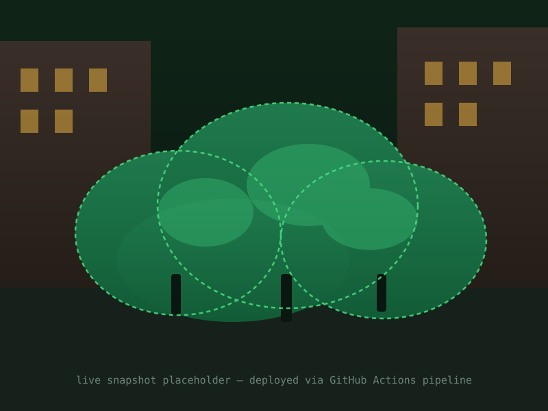

ROI mask applied
Current GCC (90th)
—
no data yet
24h Change
—
vs. same time yesterday
Season Phase
—
—
Observations Logged
—
daylight readings, all-time
Chromatic coordinate time series
Drag to pan, scroll to zoom. Toggle metrics below.
Summary statistics — selected range
Minimum
—
Maximum
—
Mean
—
Std. Dev.
—
Readings
—
Year-over-year seasonal comparison
Daily GCC (90th percentile) plotted against day-of-year, overlaid across all recorded years.